Feldgruppe
GROUP · Rahmen, der verstreute Felder zu einem Bündel zusammenfasst
Was ist eine Feldgruppe?
- 1.1Feld hinzufügen und Aufbau des Eigenschaftsbereichs
1.1Feld hinzufügen und Aufbau des Eigenschaftsbereichs
Überblick
Eine Feldgruppe (GROUP) ist ein Rahmen, der verstreute Felder zu einem Bündel zusammenfasst. Sie zeigt Elemente, die nur gemeinsam gelesen einen Sinn ergeben, wie z. B. Vitalwerte, in einer Box an. Der größte Unterschied zu anderen Typen: Sie erstellt keine neuen Felder — sie funktioniert so, dass Sie bereits im Formular vorhandene Felder auswählen und in die Gruppe verschieben. Kap. 3 Daher enthält die Gruppe selbst keinen Wert; die Werte behält jedes Mitglied unverändert selbst.
Bildschirmbeschreibung
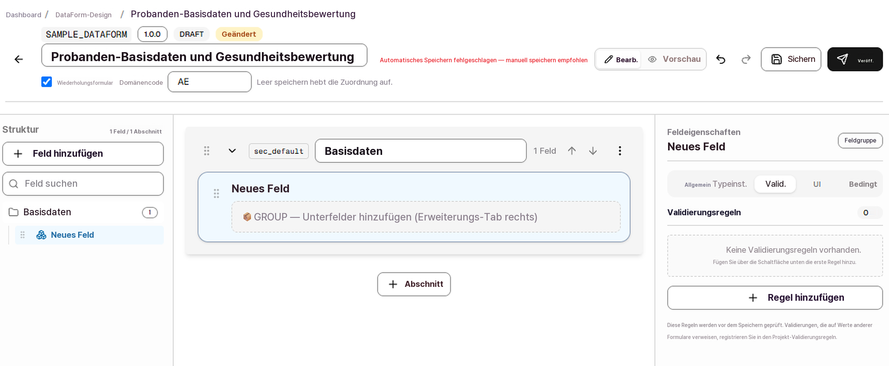
[+ Feld hinzufügen] — Wenn Sie hier den Typ festlegen, wird das Feld erstellt.
Im Strukturbaum wird ein neues Feld hinzugefügt. Das Symbol hat die Form eines Bündels.
Auf dem WYSIWYG-Canvas erscheint statt einer Box nur ein Hinweis — „GROUP — Unterfelder hinzufügen (Erweiterungs-Tab rechts)“. Der Grund: Es gibt 0 Mitglieder. 3.1
Typ-Badge „Feldgruppe“ — der Typ des ausgewählten Felds. Nach dem Hinzufügen kann er nicht geändert werden.
5 Eigenschafts-Tabs — Allgemein · Typeinstellungen · Validierung · UI · Bedingt. Die Kapitel 2–6 dieses Handbuchs entsprechen den einzelnen Tabs.
⚠ Diese Aufnahme zeigt den geöffneten Tab „Validierung“. Die Elemente des Tabs „Allgemein“ (fieldKey · Anzeigename · Pflichtfeld · SDV) werden in Kap. 2 behandelt. Zur Information: Die bei anderen Typen vorhandenen Elemente AE-Bedeutungsrolle und „Nicht gemessen“ zulassen werden im Tab „Allgemein“ nicht angezeigt — da die Gruppe keinen Wert enthält, sind diese beiden Funktionen nicht anwendbar. 7.2
Zu beachten
Unbedingt prüfen Datenschäden · Formular nicht abschließbar
- • ⛔ Ohne Mitglieder ist dieses Feld völlig nutzlos. Dieser Zustand ist daran zu erkennen, dass auf dem Canvas keine Box sichtbar ist — fügen Sie unbedingt im Tab „Typeinstellungen“ Felder hinzu. Kap. 3
Leicht missverständliches Verhalten
- • Die Gruppe enthält keinen Wert. Die Werte hat jedes Mitglied selbst; die Gruppe dient nur dazu, sie gebündelt anzuzeigen. Daher erscheinen die Mitglieder auch in den Exportdaten jeweils als eigenständige Elemente. 4.3
- • Erstellen Sie zuerst die Felder und bündeln Sie sie danach. Auch wenn Sie die Gruppe zuerst erstellen, können Sie ohne einzufügende Felder nichts tun; fügen Sie daher zuerst die zu bündelnden Elemente hinzu. 3.1
Hinweis
- • Der orangefarbene Balken links auf dem Canvas ist die Markierung „vor dem Speichern geändert“. Er kennzeichnet keinen Gruppenkandidaten und verschwindet beim Speichern.
Tab „Allgemein“ — Name · Pflicht · Verifizierung
- 2.1fieldKey · Anzeigename · Hilfetext
- 2.2Pflichtfeld
- 2.3SDV-Verifizierung (CRA-Quelldatenabgleich)
2.1fieldKey · Anzeigename · Hilfetext
Überblick
Bereich, in dem Sie den Namen der Gruppe festlegen. Der Speicherschlüssel (fieldKey) und der auf dem Bildschirm angezeigte Name (label) sind unterschiedliche Werte. Da der Anzeigename der Gruppe zum Titel der Box wird, formulieren Sie ihn so, dass auf einen Blick erkennbar ist, was darin gebündelt ist.
Bildschirmbeschreibung
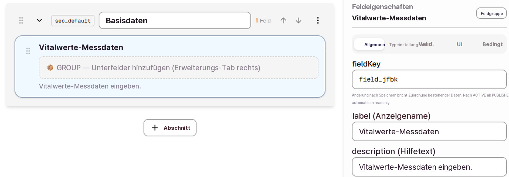
label (Anzeigename) — geben Sie den Titel ein, der über der Box angezeigt wird. In der Aufnahme: Vitalwerte-Messdaten.
Wird als Titel der Box auf dem Canvas angezeigt. Das ist eine andere Ebene als die Namen der einzelnen Mitglieder — die Mitgliedsnamen legen Sie separat im Tab „Allgemein“ des jeweiligen Mitglieds fest. 3.3
description (Hilfetext) — geben Sie die ergänzende Beschreibung ein, die unter der Box angezeigt wird. Bleibt das Feld leer, wird nichts angezeigt.
Wird in grauer Schrift unter der Box angezeigt. In der Aufnahme: „Vitalwerte-Messdaten eingeben.“
fieldKey — der Schlüssel der Gruppe. Er wird wie field_jfbk automatisch vergeben; ⚠ unter dem Schlüssel der Gruppe wird kein Wert gespeichert — die Werte werden jeweils unter den Schlüsseln der Mitglieder gespeichert. 4.3
Zu beachten
Unbedingt prüfen Datenschäden · Formular nicht abschließbar
- • Machen Sie im Anzeigenamen das Kriterium der Bündelung deutlich. Aus „Messdaten“ allein ist nicht erkennbar, was wann gemessen wurde — der Titel der Box ist die Bedeutung des Bündels.
- • Schreiben Sie in den Hilfetext nur Hinweise, die für alle Mitglieder gelten. Beschreibungen, die nur ein bestimmtes Element betreffen, gehören in den eigenen Hilfetext dieses Mitglieds — der Gruppenhilfetext gilt für die gesamte Box. 5.4
Leicht missverständliches Verhalten
- • Der fieldKey der Gruppe hat mit Werten nichts zu tun. Da er jedoch für die bedingte Anzeige Kap. 6 und für Verweise zwischen Gruppen verwendet wird, ändern Sie ihn nach dem Speichern nicht.
- • Der Anzeigename (label) kann jederzeit geändert werden. Gespeicherte Werte sind davon nicht betroffen.
2.2Pflichtfeld
Überblick
Legt fest, ob diese Gruppe ausgefüllt sein muss, damit das Formular abgeschlossen werden kann. ⚠ Das Verhalten unterscheidet sich von der Tabelle. Bei der Tabelle macht eine Pflichtspalte die gesamte Tabelle zur Pflicht; bei der Gruppe sind Gruppenpflicht und Mitgliedspflicht voneinander unabhängig — die Pflicht eines Mitglieds wird als eigene Eigenschaft dieses Mitglieds separat gezählt.
Bildschirmbeschreibung
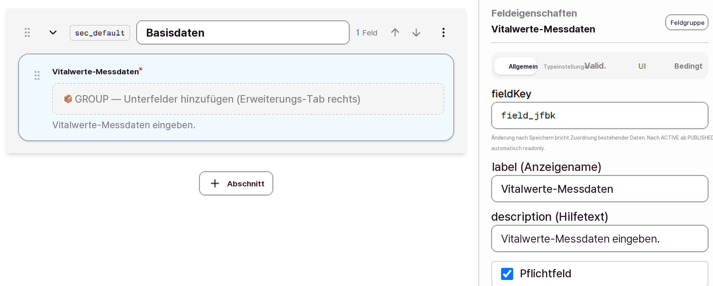
*Pflichtfeld — wenn aktiviert, wird diese Gruppe zum Pflichtelement. Ist kein einziges Mitglied ausgefüllt, kann das Formular nicht abgeschlossen werden.
Auf dem Canvas erscheint rechts neben dem Titel der Box ein rotes *. Die Sterne an den einzelnen Mitgliedern legen Sie separat im Tab „Allgemein“ des jeweiligen Mitglieds fest.
label · description — die in 2.1 eingegebenen Werte werden unverändert angezeigt.
Zu beachten
Unbedingt prüfen Datenschäden · Formular nicht abschließbar
- • ⛔ Verwechseln Sie Gruppenpflicht und Mitgliedspflicht nicht. Auch wenn die Gruppe Pflicht ist, gilt sie als erfüllt, sobald ein einziges Mitglied ausgefüllt ist. Muss jedes Mitglied zwingend erfasst werden, müssen Sie bei jedem Mitglied die Pflicht aktivieren.
- • ⛔ Umgekehrt bleibt die Mitgliedspflicht bestehen, auch wenn Sie die Gruppenpflicht ausschalten. Mitglieder sind eigenständige Felder, deren eigene Pflichteinstellung unverändert gezählt wird — anders als bei der Tabelle können Sie sie nicht überspringen, indem Sie den Container ausschalten. 7.1
- • Wird die Gruppe bedingt ausgeblendet, werden auch die Mitglieder ausgeblendet und von der Pflichtprüfung ausgenommen. 6.1
Leicht missverständliches Verhalten
- • In den meisten Fällen ist eine Gruppenpflicht nicht nötig. Stehen die zu erfassenden Elemente fest, ist die Bedeutung klarer, wenn Sie die Pflicht bei diesen Mitgliedern aktivieren.
2.3SDV-Verifizierung (CRA-Quelldatenabgleich)
Überblick
SDV (Source Data Verification) ist das Verfahren, bei dem der klinische Monitor (CRA) die eingegebenen Werte mit den Quelldaten der Einrichtung abgleicht. Diese Einstellung ist bei allen Feldtypen gleich, daher ist auch der Bildschirm unabhängig vom Typ identisch. Es wird jedoch nicht empfohlen, sie einer Gruppe zuzuweisen — lesen Sie die Hinweise unten.
Bildschirmbeschreibung

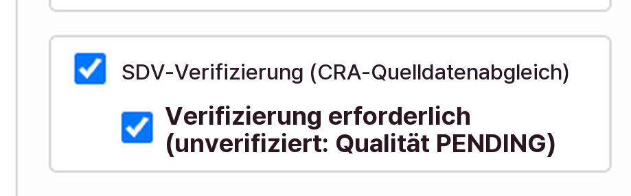
SDV-Verifizierung (CRA-Quelldatenabgleich) — Wenn aktiviert, wird dieses Feld in die Abgleichliste des CRA aufgenommen.
Mit der Aktivierung wird das Unterelement aktiv.
Verifizierung erforderlich (unverifiziert: Qualität PENDING) — kann erst festgelegt werden, nachdem ① aktiviert wurde. Wenn aktiviert, bleibt der Qualitätsstatus der betreffenden Daten auf PENDING, bis der CRA den Abgleich abgeschlossen hat.
Bevor ① aktiviert ist, ist ② ausgegraut und inaktiv. Wie der Bildschirmhinweis sagt: „Erst nach Auswahl der Verifizierung ist die Pflicht festlegbar.“
Zu beachten
Unbedingt prüfen Datenschäden · Formular nicht abschließbar
- • ⛔ Weisen Sie SDV nicht der Gruppe, sondern den Mitgliedern zu. Die Gruppe selbst hat keinen Wert und somit nichts, was abgeglichen werden könnte — die Werte, die tatsächlich mit den Quelldaten abzugleichen sind, haben Mitglieder wie Mitteldruck · Pulsdruck. 1.1
- • ⛔ Ist SDV bei der Gruppe aktiviert, glaubt man leicht, es sei bei den Mitgliedern aktiviert. Mitglieder sind eigenständige Felder; die Gruppeneinstellung wird nicht an sie weitergegeben — aktivieren Sie es bei jedem Mitglied einzeln.
Leicht missverständliches Verhalten
- • SDV kann nicht von der Person durchgeführt werden, die die Daten eingegeben hat. Das System erzwingt eine Kreuzprüfung (Cross-User SoD); eingebende und verifizierende Person müssen daher zwingend verschieden sein.
Hinweis
- • Der Qualitätsstatus durchläuft PENDING → VERIFIED → CLEAN. Ist auch nur ein Feld mit Verifizierungspflicht unverifiziert, können die betreffenden Daten nicht CLEAN werden.
Tab „Typeinstellungen“ — Mitglieder festlegen (Kern dieses Typs)
- 3.1Ausgangszustand ohne Mitglieder
- 3.2Felder für die Gruppe auswählen
- 3.3Ergebnis des Hinzufügens — das Feld wird in die Gruppe verschoben
- 3.4Elemente pro Zeile (itemsPerRow)
3.1Ausgangszustand ohne Mitglieder
Überblick
Der wichtigste Tab der Feldgruppe. Es gibt nur zwei Einstellungen — wie viele Elemente pro Zeile nebeneinander stehen (Elemente pro Zeile) und welche Felder gebündelt werden (Mitgliederauswahl). In der Aufnahme wurden im Formular die beiden Felder „Mitteldruck (MAP)“ und „Pulsdruck“ bereits vorher erstellt — denn die Gruppe erstellt diese beiden nicht neu, sondern holt sie herein.
Bildschirmbeschreibung
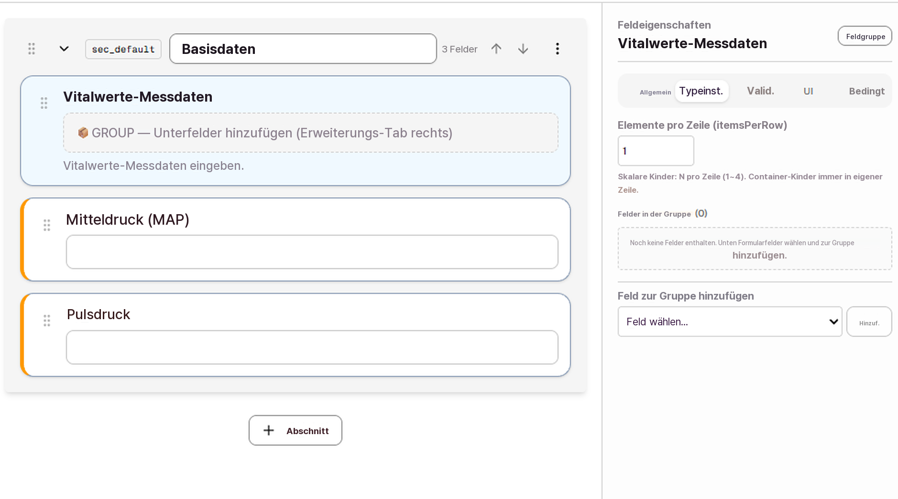
Elemente pro Zeile (itemsPerRow) — legt fest, wie viele Mitglieder in der Box pro Zeile angeordnet werden. Sie wählen aus 1~4; anfangs ist der Wert 1. 3.4
Feld zur Gruppe hinzufügen — wählen Sie ein Feld des Formulars aus, um es in die Gruppe aufzunehmen. 3.2
[Hinzufügen] — verschiebt das in ② ausgewählte Feld in die Gruppe. 3.3
Felder in der Gruppe (0) — die Mitgliederliste. Anfangs erscheint der Hinweis „Noch keine Felder enthalten. Unten Formularfelder wählen und zur Gruppe hinzufügen.“
Hinweis zu Elemente pro Zeile — „Skalare Kinder: N pro Zeile (1~4). Container-Kinder immer in eigener Zeile.“ Wenn Sie eine Tabelle oder eine andere Gruppe als Mitglied aufnehmen, belegt nur dieses Mitglied eine ganze Zeile.
„Mitteldruck (MAP)“ und „Pulsdruck“ liegen noch außerhalb der Gruppe als eigenständige Felder vor. Diese beiden sind die Kandidaten für ②.
Typ-Badge „Feldgruppe“ — der Typ des Felds, das gerade eingestellt wird.
Zu beachten
Unbedingt prüfen Datenschäden · Formular nicht abschließbar
- • ⛔ Die zu bündelnden Felder müssen zuerst erstellt werden. Enthält das Formular keine anderen Felder, zeigt die Auswahl nur „Keine Felder zum Hinzufügen vorhanden. Fügen Sie zuerst Felder zum Formular hinzu.“ an, und Sie können nichts tun. 1.1
Leicht missverständliches Verhalten
- • Es gibt kein Element Standardwert (defaultValue). Da die Gruppe keinen Wert enthält, gibt es nichts, was vorab ausgefüllt werden könnte — wenn Sie einen Standardwert benötigen, legen Sie ihn beim Mitglied fest. 7.2
- • Auch ein Element Automatische Berechnung (calculation) gibt es nicht. Das gesamte Bündel als einen einzigen Zahlenwert zu berechnen, ist nicht sinnvoll. Wenn Sie eine Berechnung benötigen, legen Sie sie bei einem Zahl-Mitglied fest. 7.2
- • Sie können eine Gruppe in eine Gruppe aufnehmen. Dies ist jedoch nur bis zur 3-fachen Verschachtelung möglich; Kandidaten jenseits dieser Grenze können in der Auswahl nicht gewählt werden und erhalten den Grund „— Verschachtelungstiefe überschritten“. 3.2
3.2Felder für die Gruppe auswählen
Überblick
Wählen Sie in der Auswahl ein Feld aus, das in die Gruppe aufgenommen werden soll. Die Liste zeigt die Felder der obersten Ebene des Formulars mit Name und Typ. Durch das bloße Auswählen geschieht nichts; erst wenn Sie [Hinzufügen] drücken, wird das Feld tatsächlich verschoben. 3.3 Da Sie jeweils nur ein Feld auswählen können, wiederholen Sie den Vorgang für jedes Mitglied.
Bildschirmbeschreibung
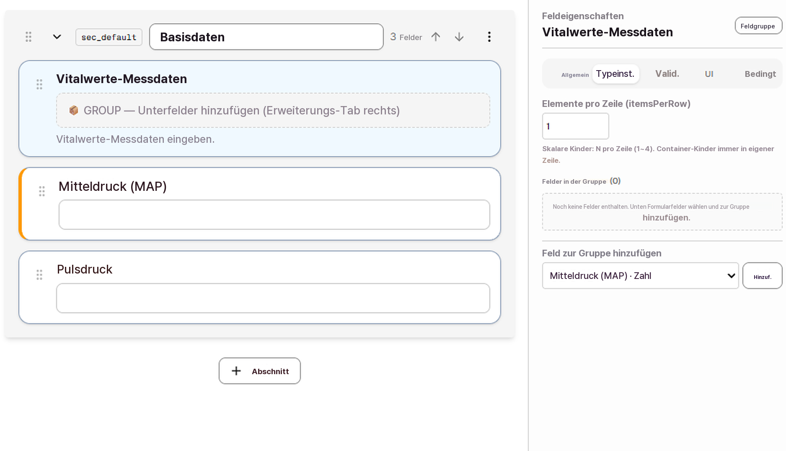
Mitteldruck (MAP) · Zahl gewählt — noch nicht verschobenFeld zur Gruppe hinzufügen — in der Aufnahme wurde Mitteldruck (MAP) · Zahl gewählt. Die Listeneinträge haben das Format Anzeigename · Typ, sodass sie auch bei gleichen Namen unterscheidbar sind.
[Hinzufügen] — vor der Auswahl ausgegraut und inaktiv; erst wenn Sie nach der Auswahl darauf drücken, wird das Feld in die Gruppe verschoben. 3.3
Der Canvas ist noch unverändert. „Mitteldruck (MAP)“ befindet sich weiterhin außerhalb der Gruppe — durch bloßes Auswählen in der Auswahl wird es nicht verschoben.
Felder in der Gruppe (0) — noch 0 Einträge.
Zu beachten
Unbedingt prüfen Datenschäden · Formular nicht abschließbar
- • ⛔ Gruppen, die die Grenze der Verschachtelungstiefe überschreiten, können nicht gewählt werden. In der Liste werden sie mit „— Verschachtelungstiefe überschritten“ als inaktiv angezeigt — da sie nicht ausgeblendet werden, sondern der Grund angezeigt wird, können Sie direkt an Ort und Stelle sehen, warum es nicht möglich ist. 3.1
Leicht missverständliches Verhalten
- • In der Liste erscheinen nur Felder der obersten Ebene. Die Spalten einer Tabelle sind Elemente, die nur innerhalb der Tabelle existieren, und erscheinen daher nicht in der Liste — sie können nicht zu einer Gruppe gebündelt werden. 7.2
- • Abschnittsüberschriften und Felder ohne Namen sind ebenfalls ausgeschlossen. Um ein Feld ohne Namen aufzunehmen, legen Sie zuerst einen Anzeigenamen für dieses Feld fest. 2.1
Hinweis
- • Die Reihenfolge können Sie später ändern. Die Reihenfolge des Hinzufügens ist zugleich die Anzeigereihenfolge, Sie können sie jedoch mit ∧ ∨ in der Mitgliederliste anpassen. 3.3
3.3Ergebnis des Hinzufügens — das Feld wird in die Gruppe verschoben
Überblick
Diese Seite ist der Kern der Feldgruppe. Wenn Sie [Hinzufügen] drücken, wird das Feld nicht kopiert, sondern verschoben — es verlässt die oberste Ebene und gelangt in die Gruppe. Daher verringert sich die Anzahl der Felder im Strukturbaum um eins, und das Feld wird unterhalb der Gruppe um eine Stufe eingerückt angezeigt.
Bildschirmbeschreibung
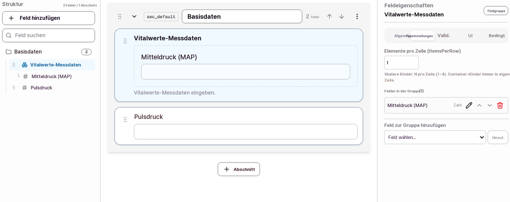
In der Mitgliederliste ist 1 Eintrag hinzugekommen. Neben dem Anzeigenamen erscheint ein Typ-Badge (Zahl).
Im Strukturbaum wird „Mitteldruck (MAP)“ unter der Gruppe eingerückt. Es ist kein Feld der obersten Ebene mehr.
Auch auf dem Canvas wandert das Feld in die Box. „Pulsdruck“ bleibt noch außerhalb.
3 Symbole zur Mitgliederbedienung — von links ✏ Bearbeiten · ∧ ∨ Reihenfolge · 🗑. Der Stift führt zum Eigenschaftsbereich dieses Mitglieds, wo Sie Name · Pflicht · Validierung des Mitglieds selbst einstellen; die Pfeile ändern die Reihenfolge der Mitglieder. ⚠ 🗑 bedeutet nicht Löschen, sondern „Aus der Gruppe entfernen“ — wenn Sie darauf drücken, kehrt das Feld nur auf die oberste Ebene zurück und verschwindet nicht; auch der Wert bleibt erhalten.
Felder in der Gruppe (1) — die Anzahl hat sich von 0 auf 1 geändert.
Die Anzahl der Felder der obersten Ebene ist von 3 auf 2 gesunken. Der Grund: Das Mitglied wurde in die Gruppe verschoben.
Die Auswahl springt auf „Feld wählen…“ zurück, und das soeben aufgenommene Feld verschwindet aus den Kandidaten. Um das verbleibende Feld „Pulsdruck“ aufzunehmen, wiederholen Sie denselben Vorgang noch einmal.
Zu beachten
Unbedingt prüfen Datenschäden · Formular nicht abschließbar
- • ⛔ Verstehen Sie 🗑 nicht als Löschen. Es entfernt das Feld nur aus der Gruppe; weder das Feld noch der Wert verschwinden. Um ein Feld wirklich zu entfernen, müssen Sie dieses Feld auswählen und löschen.
- • Prüfen Sie zuerst, was mit den Mitgliedern geschieht, wenn Sie die Gruppe löschen. Wenn Sie nur die Bündelung aufheben möchten, ist es sicherer, die Mitglieder einzeln mit 🗑 zu entfernen und danach die leere Gruppe zu löschen.
Leicht missverständliches Verhalten
- • Mitglieder sind weiterhin eigenständige Felder. Auch nach dem Verschieben in die Gruppe behalten sie ihren eigenen fieldKey · Pflicht · Validierung und können in Validierungsregeln und bei Bedingungen direkt referenziert werden. Das ist der entscheidende Unterschied zu den Spalten einer Tabelle. 4.3 · 7.1
- • Die Einstellungen eines Mitglieds nehmen Sie beim Mitglied vor. Im Eigenschaftsbereich der Gruppe gibt es weder Pflicht noch Validierung der Mitglieder — drücken Sie ✏, um zu diesem Mitglied zu wechseln. 2.2
3.4Elemente pro Zeile (itemsPerRow)
Überblick
Legt fest, wie viele Mitglieder in der Box pro Zeile nebeneinander stehen. Sie wählen aus 1~4; ohne Angabe gilt 1 (untereinander stapeln). Da eine Änderung des Werts sofort auf dem Canvas sichtbar wird, können Sie das Ergebnis direkt prüfen. ⚠ Dies ist eine Einstellung, die nur die Anordnung ändert, und hat keinen Einfluss auf gespeicherte Werte.
Bildschirmbeschreibung
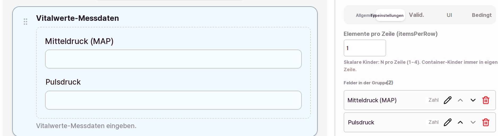
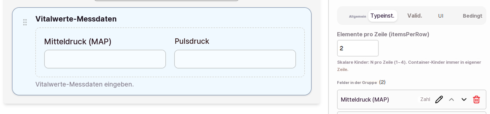
Elemente pro Zeile (itemsPerRow) — geben Sie die Zahl direkt ein. Werte kleiner als 1 oder größer als 4 werden automatisch auf den Bereich angepasst.
Bei 1 stehen „Mitteldruck (MAP)“ und „Pulsdruck“ untereinander, bei 2 nebeneinander. Die Höhe, die eine Box einnimmt, verringert sich entsprechend.
Zu beachten
Unbedingt prüfen Datenschäden · Formular nicht abschließbar
- • ⛔ Verwenden Sie 3 · 4 mit Bedacht. Bei vier Elementen pro Zeile wird jedes Feld schmal, und lange Anzeigenamen werden abgeschnitten — prüfen Sie dies zusammen mit der Layoutbreite 5.2.
Leicht missverständliches Verhalten
- • Platzieren Sie Elemente, die gemeinsam gelesen werden müssen, in derselben Zeile. Werte, die als Paar interpretiert werden, wie systolischer · diastolischer Blutdruck, müssen nebeneinander stehen, damit der Erfasser Fehleinträge bemerkt.
- • Wenn Sie eine Tabelle · eine andere Gruppe als Mitglied aufnehmen, wird diese Einstellung ignoriert. Wie der Bildschirmhinweis sagt, „Container-Kinder immer in eigener Zeile“ — nur dieses Mitglied belegt eine ganze Zeile. 3.1
Hinweis
- • Wenn Sie den Wert leeren, gilt wieder 1. Untereinander stapeln ist die Standardanordnung.
Tab „Validierung“ — Wertprüfung vor dem Speichern
- 4.1Ohne Validierungsregeln
- 4.2Regel hinzufügen
- 4.3Fertig erstellte Regel — Vergleich mit anderem Feld
4.1Ohne Validierungsregeln
Überblick
In diesem Tab sammeln Sie Regeln, die vor dem Speichern prüfen, ob Werte die Bedingungen erfüllen. ⚠ Hier geht es um Regeln für die Gruppe selbst, und die Gruppe hat keinen Wert — daher gibt es praktisch nur eine verwendbare Regelart 4.3. Regeln, die die Werte der einzelnen Mitglieder prüfen, erstellen Sie im Tab „Validierung“ des jeweiligen Mitglieds. 3.3
Bildschirmbeschreibung
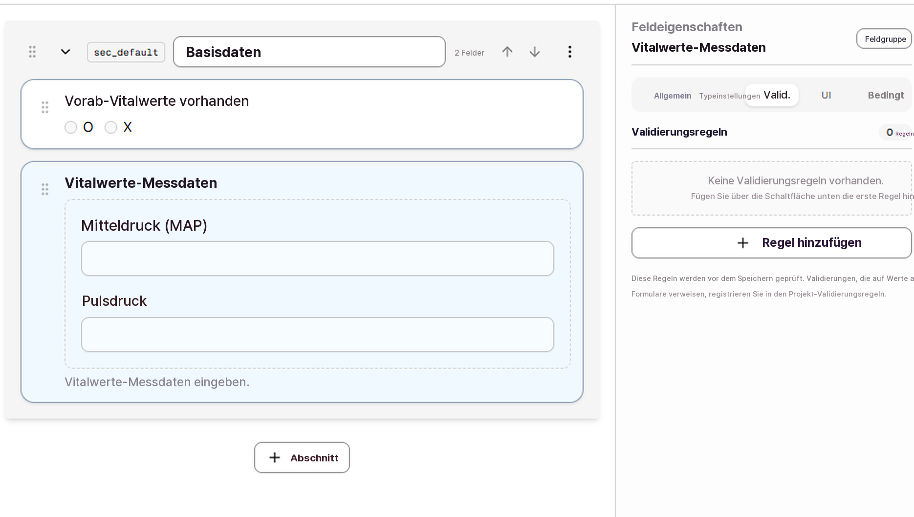
[+ Regel hinzufügen] — erstellt die erste Regel. Der Bildschirm nach der Auswahl wird in 4.2 erläutert.
Bereich Validierungsregeln und Anzahl der registrierten Regeln. Anfangs 0 Regeln.
Ohne Regeln erscheint der Hinweis „Keine Validierungsregeln vorhanden. Fügen Sie über die Schaltfläche unten die erste Regel hinzu.“
Hinweis unten — „Diese Regeln werden vor dem Speichern geprüft. Validierungen, die auf Werte anderer Formulare verweisen, registrieren Sie in den Projekt-Validierungsregeln.“
Zu beachten
Unbedingt prüfen Datenschäden · Formular nicht abschließbar
- • ⛔ Prüfen Sie die Werte der Mitglieder beim Mitglied. Eine Regel wie „Der Mitteldruck muss 40~200 betragen“ gehört in den Tab „Validierung“ dieses Mitglieds; legen Sie sie hier im Gruppen-Tab fest, wird das falsche Ziel (ein Bündel ohne Wert) geprüft. 3.3
- • ⛔ Validierungen, die auf Werte anderer Formulare verweisen, können hier nicht erstellt werden. Solche Regeln registrieren Sie im Bildschirm „Projekt-Validierungsregeln“ — dort können Sie jedoch nur Mitglieder auswählen, nicht die Gruppe selbst. 7.2
Leicht missverständliches Verhalten
- • Regeln, die Mitglieder untereinander vergleichen, können Sie auf der Seite der Mitglieder erstellen. Da Gruppenmitglieder als Felder der obersten Ebene behandelt werden, können Sie im Tab „Validierung“ eines Mitglieds ein anderes Mitglied als Vergleichselement wählen. 4.3
- • In der Aufnahme gibt es zwei Felder der obersten Ebene: „Vorab-Vitalwerte vorhanden“ (Einzelauswahl) und „Vitalwerte-Messdaten“ (Gruppe) — von der Antwort im ersten Feld hängt ab, ob die Gruppe erfasst wird; daher wird in 4.3 eine Regel erstellt, die diese beiden Felder verknüpft.
4.2Regel hinzufügen
Überblick
Wenn Sie in 4.1 [+ Regel hinzufügen] wählen, wird der Block Regel 1 erstellt. Anfangs ist „Wertebereich“ eingestellt, doch die Gruppe hat gar keinen Wert, der verglichen werden könnte. Ändern Sie die Einstellung auf „Vergleich mit anderem Feld“ — die einzige Art, die bei der Gruppe verwendbar ist. 4.3
Bildschirmbeschreibung
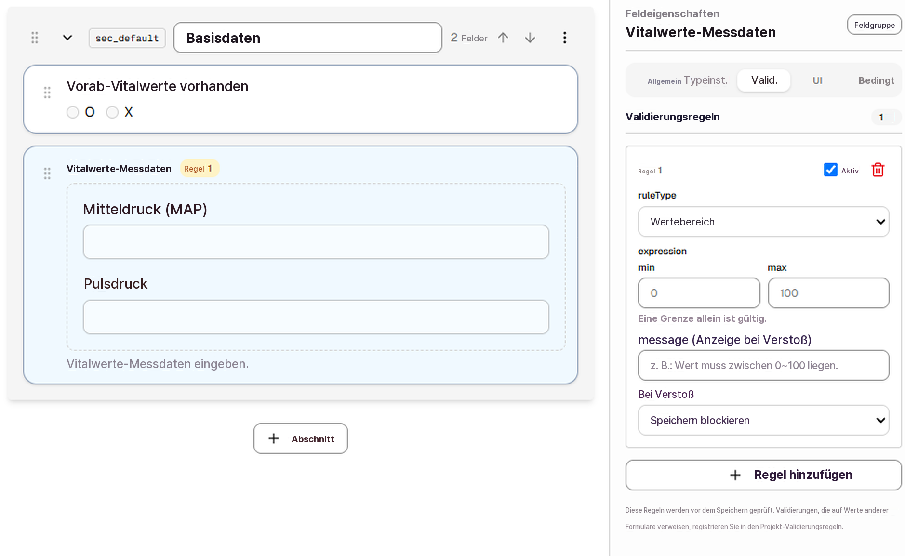
[+ Regel hinzufügen] — erstellt eine weitere Regel. (Dieselbe Schaltfläche, die Sie in 4.1 gewählt haben.)
Neben dem Titel der Box auf dem Canvas erscheint das Badge „Regel 1“.
Die Regelanzahl ändert sich auf 1 Regel.
Checkbox Aktiv und Symbol Löschen — Sie können die Regel vorübergehend aussetzen, ohne sie zu löschen.
ruleType — die Art der Regel. Direkt nach dem Erstellen ist „Wertebereich“ eingestellt; ändern Sie sie daher unbedingt auf „Vergleich mit anderem Feld“.
min — das Feld für die Untergrenze, das bei Auswahl von Wertebereich erscheint.
max — das Feld für die Obergrenze, das unter derselben Bedingung erscheint.
message (Anzeige bei Verstoß) — der Text, der Benutzern bei einem Regelverstoß angezeigt wird.
Bei Verstoß — Wählen Sie Speichern blockieren oder Warnung. (Je nach ruleType ist die Auswahl teils nicht möglich — 4.3)
Die blasse Schrift 0 · 100 und „Eine Grenze allein ist gültig.“ sind Hinweise zum Wertebereich und keine eingestellten Werte.
Zu beachten
Unbedingt prüfen Datenschäden · Formular nicht abschließbar
- • ⛔ Legen Sie den Blutdruckbereich nicht hier fest. min · max beziehen sich auf den Wert der Gruppe selbst, und da die Gruppe keinen Wert hat, geschieht nichts — da auch kein Fehler erscheint, geht man weiter in dem Glauben, eine Regel festgelegt zu haben. Legen Sie Bereiche beim jeweiligen Mitglied fest. 4.1
- • ⛔ Wenn Sie „Format (Regex)“ für die Gruppe festlegen, bleibt das Speichern dauerhaft blockiert. Der reguläre Ausdruck prüft das Bündel, nachdem es in eine feste interne Zeichenkette umgewandelt wurde; daher ist jeder Ausdruck immer ein Verstoß, und der Erfasser hat keine Möglichkeit mehr, das Formular zu speichern.
- • ⛔ Auch „Dezimalstellen“ funktioniert nicht. Aus demselben Grund — legen Sie Dezimalstellen bei einem Zahl-Mitglied fest. 4.1
- • Bleibt message leer, wissen Benutzer nicht, warum gesperrt wurde. Geben Sie unbedingt einen Text ein.
4.3Fertig erstellte Regel — Vergleich mit anderem Feld
Überblick
Wenn Sie ruleType auf Vergleich mit anderem Feld ändern, wird gegen den Wert eines anderen Felds im selben Formular geprüft. Da die Gruppe keinen Wert hat, ist nur diese Regel sinnvoll — denn das Vergleichsziel ist nicht die Gruppe selbst, sondern ein anderes Feld. ⚠ Achten Sie auf die Anzahl der Elemente im Bildschirmhinweis — dort zeigt sich die Eigenart dieses Typs.
Bildschirmbeschreibung
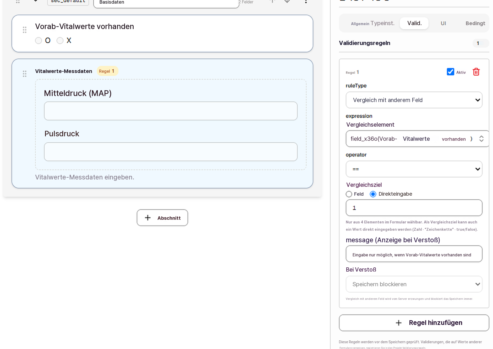
1 istruleType = Vergleich mit anderem Feld — Wenn ausgewählt, werden die Felder darunter für den Vergleich umgestellt.
Vergleichselement — in der Aufnahme field_x36o(Vorab-Vitalwerte vorhanden). ⚠ Wählen Sie nicht die Gruppe selbst.
operator — die Vergleichsart. In der Aufnahme == (gleich).
Vergleichsziel — wählen Sie Feld oder Direkteingabe. In der Aufnahme wurde per Direkteingabe 1 eingegeben — der gespeicherte Wert von „Vorab-Vitalwerte vorhanden“.
message (Anzeige bei Verstoß) — in der Aufnahme Eingabe nur möglich, wenn Vorab-Vitalwerte vorhanden sind.
Bei Verstoß — grau und inaktiv. Wie der Bildschirmhinweis sagt: „Vergleich mit anderem Feld wird vom Server erzwungen und blockiert das Speichern immer.“
Bildschirmhinweis — „Nur aus 4 Elementen im Formular wählbar.“ ⚠ Felder der obersten Ebene gibt es nur zwei (Vorab vorhanden · Gruppe), dennoch sind es 4 — denn die beiden Gruppenmitglieder sind ebenfalls unter den Kandidaten. 7.1
Zu beachten
Unbedingt prüfen Datenschäden · Formular nicht abschließbar
- • ⛔ Wählen Sie nicht die Gruppe selbst als Vergleichselement. Da die Gruppe keinen Wert hat, kann sie niemals gleich
1sein; sobald auch nur ein Mitglied ausgefüllt wird, liegt ein Verstoß vor, und das Speichern bleibt dauerhaft blockiert. - • ⛔ Als Vergleichsziel geben Sie nicht den Bildschirmtext, sondern den gespeicherten Wert ein. „Vorab-Vitalwerte vorhanden“ erscheint auf dem Bildschirm als
O·X; prüfen Sie daher zuerst in der Optionsliste dieses Felds, ob der gespeicherte Wert wirklich1ist. - • Dieselbe Beziehung können Sie auch mit der bedingten Anzeige 6.2 herstellen. Wenn Sie beides festlegen, entsteht eine Doppelung, die weder fragt noch das Speichern zulässt; verwenden Sie daher nur eines davon — bei der Gruppe wird die bedingte Anzeige empfohlen. 6.1
Leicht missverständliches Verhalten
- • Gruppenmitglieder erscheinen unverändert in der Liste. Der Grund: Mitglieder werden als Felder der obersten Ebene behandelt; daher können Sie bei einem anderen Feld eine Regel wie „Wenn der Mitteldruck eingegeben ist …“ festlegen. Die Spalten einer Tabelle erscheinen nicht in der Liste, daher ist dies dort nicht möglich. 3.3
Tab „UI“ — Bildschirmanordnung und Hinweistexte
- 5.1Gesamtaufbau des Tabs „UI“
- 5.2Layoutbreite
- 5.3Schreibgeschützt · Ausblenden
- 5.4placeholder · helpText
5.1Gesamtaufbau
Überblick
In diesem Tab legen Sie nicht den Wert selbst fest, sondern wie das Feld auf dem Bildschirm angeordnet und erläutert wird. Die Einstellungen dieses Tabs ändern die gespeicherten Daten selbst nicht. ⚠ Von den fünf Elementen funktioniert placeholder bei der Gruppe nicht — denn die Gruppe hat kein Eingabefeld, in das Text eingegeben werden könnte. 5.4
Bildschirmbeschreibung
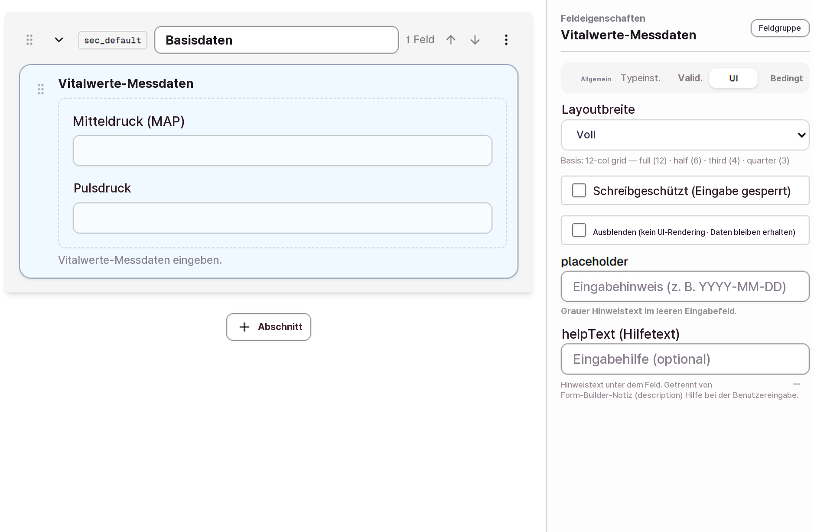
Layoutbreite — die Breite, die diese Box in einer Formularzeile einnimmt. Zusammen mit Elemente pro Zeile 3.4 bestimmt sie die Anordnung in der Box. 5.2
Schreibgeschützt (Eingabe gesperrt) — anzeigen, aber keine Änderung zulassen. Alle Mitglieder werden gemeinsam gesperrt. 5.3
Ausblenden (kein UI-Rendering · Daten bleiben erhalten) — auf dem Bildschirm verbergen. Box und Mitglieder verschwinden gemeinsam. 5.3
placeholder — wird bei der Gruppe nicht angewendet. Den Hinweistext in den Eingabefeldern der Mitglieder legen Sie im Tab „UI“ des jeweiligen Mitglieds fest. 5.4
helpText (Hilfetext) — der Hinweistext, der unter der Box angezeigt wird. Dieser funktioniert normal. 5.4
Typ-Badge „Feldgruppe“
Zu beachten
Unbedingt prüfen Datenschäden · Formular nicht abschließbar
- • ⛔ Auch wenn Sie bei placeholder etwas eingeben, ändert sich der Bildschirm nicht. Die Gruppe ist kein Eingabefeld, sondern eine Box für Mitglieder, und hat daher keinen Platz für Text — wenn Sie einen Hinweis im Feld benötigen, tragen Sie ihn im Tab „UI“ des jeweiligen Mitglieds ein. 5.4
- • ⛔ Ausblenden löscht gespeicherte Werte nicht. Sie werden nur auf dem Bildschirm verborgen; die Werte der Mitglieder bleiben erhalten und sind in Export und Audit-Trail enthalten. 5.3
Leicht missverständliches Verhalten
- • Die Einstellungen in diesem Tab ändern gespeicherte Werte nicht. Nur Anordnung und Hinweise ändern sich.
Hinweis
- • Verwenden Sie Schreibgeschützt und Ausblenden nicht zusammen. Ausblenden hat Vorrang, die Einstellung Schreibgeschützt bleibt dann wirkungslos. 5.3
5.2Layoutbreite
Überblick
Legt fest, welche Breite diese Box in einer Formularzeile einnimmt. ⚠ Bei der Gruppe wird diese Einstellung mit Elemente pro Zeile 3.4 multipliziert — bei halber Breite und 2 Elementen pro Zeile nutzt jedes Mitglied nur 1/4 der Gesamtbreite. Betrachten Sie die beiden Einstellungen nicht getrennt, sondern prüfen Sie sie zusammen.
Bildschirmbeschreibung
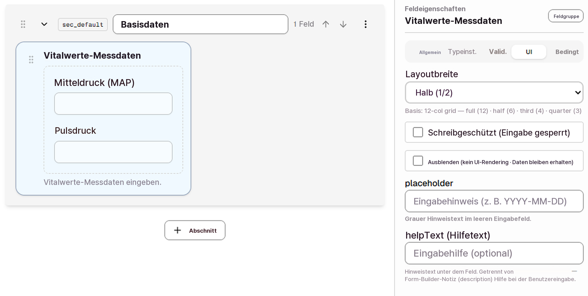
Layoutbreite — Wählen Sie zwischen Voll · Halb (1/2) · 1/3 · 1/4.
Die gesamte Box schrumpft auf halbe Breite. Auch die Mitglieder darin werden schmaler, und auf dem verbleibenden Platz derselben Zeile werden andere Felder angeordnet.
Basis: 12-col grid — wie der Bildschirmhinweis sagt: „full (12) · half (6) · third (4) · quarter (3)“.
Zu beachten
Unbedingt prüfen Datenschäden · Formular nicht abschließbar
- • ⛔ Verwenden Sie eine geringe Breite nicht zusammen mit vielen Elementen pro Zeile. Bei halber Breite × 4 Elementen pro Zeile wird jedes Feld 1/8 der Gesamtbreite, sodass weder Anzeigename noch Wert lesbar sind. 3.4
Leicht missverständliches Verhalten
- • Bei zwei oder mehr Mitgliedern wird die volle Breite empfohlen. Da Rahmen und Titel der Box zusätzlichen Platz beanspruchen, wirkt eine Gruppe bei gleicher Breite schmaler als ein einzelnes Feld.
- • Bei einer Gruppe mit nur einem Mitglied können Sie die Breite verringern. Überlegen Sie in diesem Fall jedoch zuerst, ob es überhaupt einen Grund gibt, eine Gruppe zu bilden. 1.1
Hinweis
- • Ohne Angabe gilt die volle Breite.
5.3Schreibgeschützt · Ausblenden
Überblick
Einstellungen, mit denen Sie die Box anzeigen, aber keine Änderung zulassen, oder auf dem Bildschirm verbergen, die Werte aber erhalten. Beide löschen keine gespeicherten Werte und gelten für alle Mitglieder in der Box — um nur einzelne Mitglieder zu sperren oder zu verbergen, müssen Sie dies separat im Tab „UI“ des jeweiligen Mitglieds festlegen.
Bildschirmbeschreibung
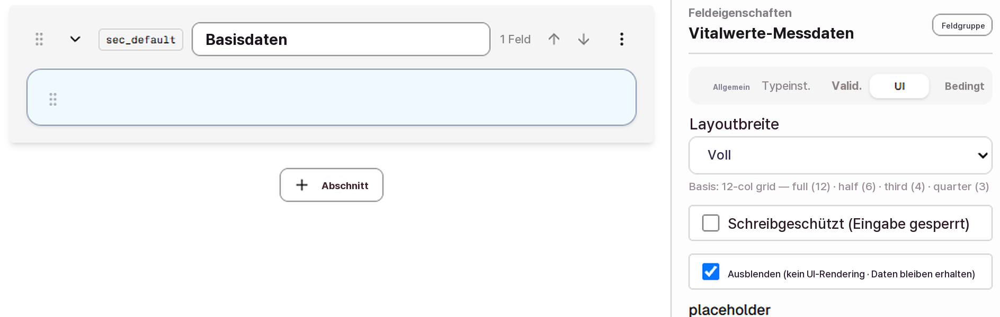
Schreibgeschützt (Eingabe gesperrt) — wenn aktiviert, werden die Mitglieder angezeigt, der Erfasser kann sie aber nicht ändern. Der gesamte Inhalt der Box wird gesperrt.
Ausblenden (kein UI-Rendering · Daten bleiben erhalten) — wenn aktiviert, wird diese Box in der Eingabemaske nicht angezeigt.
Von der Canvas-Karte bleibt nur ein leerer Rahmen. Weder Titel noch Mitglieder werden angezeigt.
Layoutbreite — der in 5.2 eingestellte Wert.
Zu beachten
Unbedingt prüfen Datenschäden · Formular nicht abschließbar
- • ⛔ Die Werte von mit Ausblenden verborgenen Mitgliedern bleiben erhalten. Da sie in Export und Audit-Trail enthalten sind, müssen Sie Werte, die nicht aufbewahrt werden dürfen, nicht verbergen, sondern löschen. 4.3
- • ⛔ Wenn Sie Pflichtmitglieder ausblenden, kann das Formular möglicherweise nicht abgeschlossen werden. Anders als die bedingte Anzeige befreit das Ausblenden in diesem Tab nicht von der Pflichtprüfung — um abhängig von einer Bedingung zu verbergen, verwenden Sie die bedingte Anzeige. 2.2 · 6.1
Leicht missverständliches Verhalten
- • Verwenden Sie Schreibgeschützt für Werte, die aus anderen Quellen übernommen werden. Verwenden Sie es nicht für Bündel, die der Erfasser selbst erfassen muss.
Hinweis
- • Werden Ausblenden und Schreibgeschützt zusammen gewählt, hat Ausblenden Vorrang.
5.4placeholder · helpText
Überblick
Legt die Hinweistexte in und unter der Box fest. Bei der Gruppe haben die beiden Elemente ein unterschiedliches Schicksal — helpText wird unter der Box normal angezeigt, placeholder wird dagegen nirgends verwendet. Denn die Gruppe ist kein Eingabefeld, sondern eine Box für Mitglieder.
Bildschirmbeschreibung
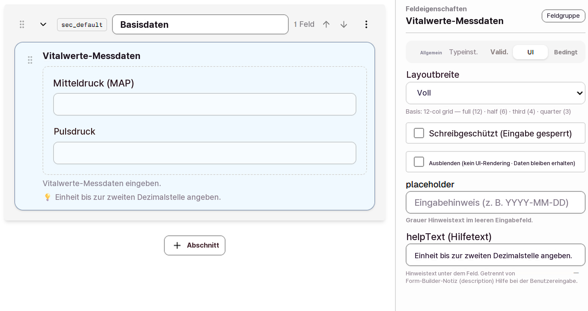
placeholder — blasse Schrift, die im leeren Eingabefeld angezeigt wird. Wird bei der Gruppe nicht angewendet.
Die Eingabefelder der Mitglieder folgen den eigenen Einstellungen des jeweiligen Mitglieds — dass die beiden Felder in der Aufnahme leer sind, liegt daran, dass für diese Mitglieder kein placeholder festgelegt wurde; was Sie hier auch eingeben, sie werden dadurch nicht gefüllt. 5.1
helpText (Hilfetext) — der Hinweistext, der unter der Box angezeigt wird. In der Aufnahme: „Einheit bis zur zweiten Dezimalstelle angeben.“
Wird unter der Box zusammen mit dem Symbol 💡 angezeigt. Dieser funktioniert normal.
description (Hilfetext) — der in 2.1 eingegebene Text. Er ist ein anderes Element als helpText und wird ohne Symbol in der Zeile darüber angezeigt.
Zu beachten
Unbedingt prüfen Datenschäden · Formular nicht abschließbar
- • ⛔ Ein bei placeholder eingetragener Text wird nirgends angezeigt. Wenn Sie einen Hinweis im Feld benötigen, wechseln Sie mit ✏ zu diesem Mitglied und legen Sie ihn dort fest. 3.3 · 5.1
- • ⛔ Tragen Sie in helpText keine Inhalte ein, die nur ein bestimmtes Mitglied betreffen. Da der Text für die gesamte Box gilt, wird er so missverstanden, als gelte er auch für die anderen Mitglieder. 2.1
Leicht missverständliches Verhalten
- • Regeln, die für alle Mitglieder gelten, tragen Sie in helpText ein. Wenn Sie wie in der Aufnahme „Einheit bis zur zweiten Dezimalstelle angeben.“ eintragen, wird dies als Hinweis gelesen, der für alle Felder in der Box gilt.
- • description und helpText werden zusammen angezeigt. Wenn Sie beide eingeben, entstehen zwei Zeilen; schreiben Sie daher nicht zweimal denselben Inhalt. 2.1
Tab „Bedingt“ — Anzeige abhängig von anderen Werten
- 6.1Bedingte Anzeige aktivieren
- 6.2Bedingung festlegen
6.1Bedingte Anzeige aktivieren
Überblick
Eine Funktion, die diese Box abhängig vom Wert eines anderen Felds anzeigt oder verbirgt. Bei der Gruppe ist diese Funktion besonders wirkungsvoll — denn mit einer einzigen Bedingung erscheinen und verschwinden alle Mitglieder in der Box gemeinsam. Sie müssen nicht bei jedem Mitglied dieselbe Bedingung wiederholt festlegen.
Bildschirmbeschreibung
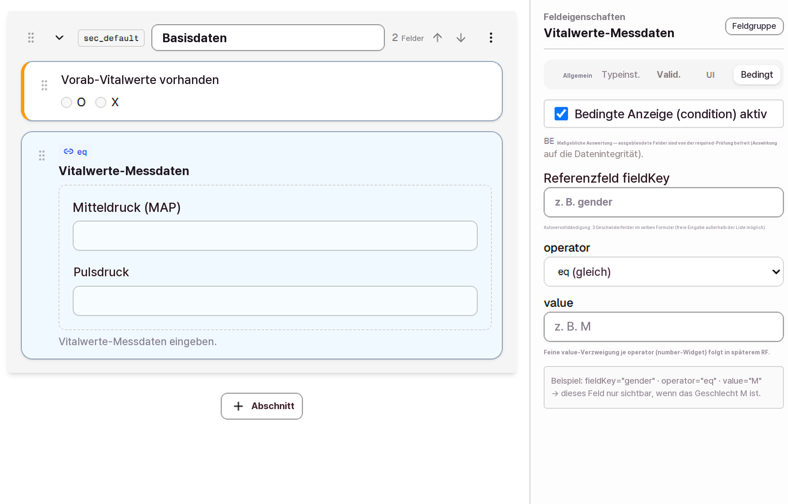
Bedingte Anzeige (condition) aktiv — Wenn aktiviert, werden die folgenden Bedingungseinstellungen angezeigt.
Über der Box auf dem Canvas erscheint das Badge 🔗 eq und zeigt an, dass eine Bedingung angewendet wurde.
Referenzfeld fieldKey — ein anderes Feld im selben Formular, das als Grundlage der Bedingung dient. ⚠ Wie der Bildschirmhinweis „Autovervollständigung: 3 Geschwisterfelder im selben Formular“ zeigt, sind auch Gruppenmitglieder unter den Kandidaten. 4.3
operator — die Vergleichsart. Standard ist eq (gleich).
value — der Vergleichswert. Geben Sie den gespeicherten Wert des Referenzfelds ein. 6.2
⚠ Bildschirmhinweis — „ausgeblendete Felder sind von der required-Prüfung befreit (Auswirkung auf die Datenintegrität).“ Die Bedingung wird vom System ausgewertet.
Beispiel unten — fieldKey="gender" · operator="eq" · value="M" → dieses Feld nur sichtbar, wenn das Geschlecht M ist.
Zu beachten
Unbedingt prüfen Datenschäden · Formular nicht abschließbar
- • ⛔ Separat bei einem Mitglied festgelegte Bedingungen gelten zusätzlich zur Gruppenbedingung. Auch wenn die Gruppe sichtbar ist, bleibt ein Mitglied ausgeblendet, solange seine eigene Bedingung falsch ist — wenn Sie zwei Bedingungen überlagern, lässt sich schwer nachvollziehen, warum etwas nicht sichtbar ist.
- • ⛔ Wird eine Bedingung nach der Eingabe falsch, verschwindet die Box vom Bildschirm. Die Werte der Mitglieder bleiben erhalten; wenn die Antwort auf die vorherige Frage später geändert wurde, müssen Sie die verbliebenen Werte daher separat löschen. 5.3
Leicht missverständliches Verhalten
- • Die Bedingung gilt auch für die Mitglieder. Wird die Gruppe ausgeblendet, werden auch alle Mitglieder darin ausgeblendet und von der Pflichtprüfung ausgenommen — daher genügt es, die Bedingung bei gebündelten Feldern nur einmal festzulegen. 2.2
Hinweis
- • Wenn Sie die Bedingung aktivieren und das Referenzfeld leer lassen, ist die Bedingung nicht erfüllt. Geben Sie unbedingt ②~④ vollständig ein. 6.2
6.2Bedingung festlegen
Überblick
Zustand, in dem die in 6.1 aktivierte Bedingung vollständig eingegeben wurde. Mit dieser Einstellung wird die Box nur dann angezeigt, wenn der Wert von „Vorab-Vitalwerte vorhanden“ 1 ist, und auch die beiden Mitglieder darin erscheinen. Es wird dasselbe Referenzfeld wie bei der Validierungsregel in 4.3 verwendet, statt das Speichern zu blockieren, wird jedoch gar nicht erst gefragt.
Bildschirmbeschreibung
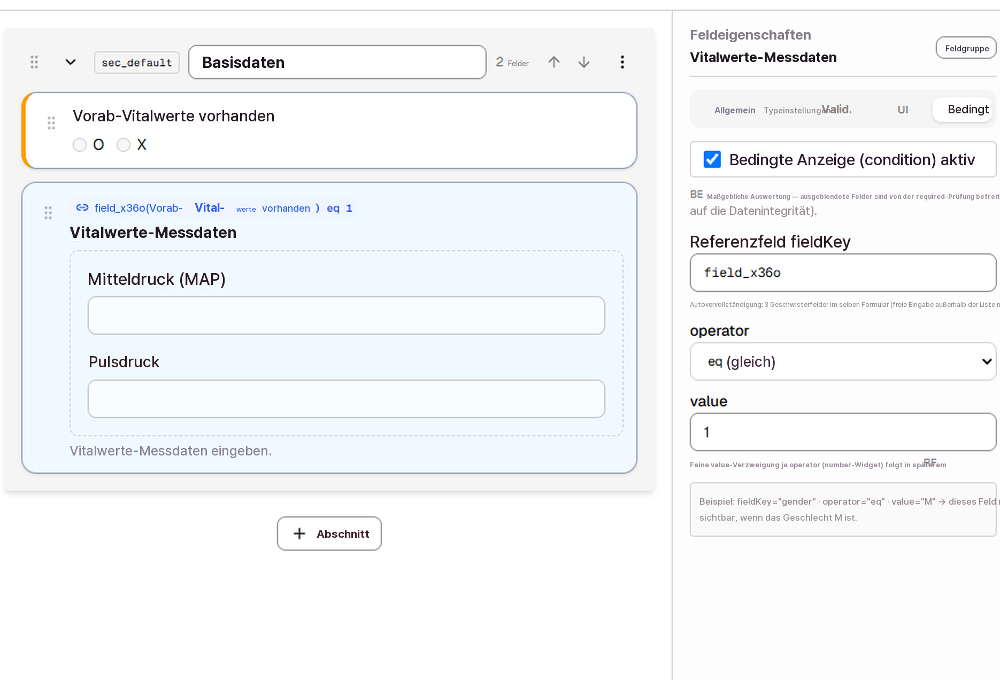
Vorab-Vitalwerte vorhanden 1 istReferenzfeld fieldKey = field_x36o — verweist auf das Feld „Vorab-Vitalwerte vorhanden“ im selben Formular. Es ist dasselbe Feld wie bei der Validierungsregel in 4.3.
Ergebnis der vollständigen Eingabe von ①~③ — das Badge auf dem Canvas konkretisiert sich zu 🔗 field_x36o(Vorab-Vitalwerte vorhanden) eq 1.
operator = eq (gleich)
value = 1 — geben Sie nicht das auf dem Bildschirm sichtbare O, sondern den gespeicherten Wert dieser Option ein.
⚠ Bildschirmhinweis — „ausgeblendete Felder sind von der required-Prüfung befreit (Auswirkung auf die Datenintegrität).“
Beispiel unten — fieldKey="gender" · operator="eq" · value="M" → dieses Feld nur sichtbar, wenn das Geschlecht M ist.
Zu beachten
Unbedingt prüfen Datenschäden · Formular nicht abschließbar
- • ⛔ Geben Sie bei value nicht den Bildschirmtext, sondern den gespeicherten Wert ein. Wenn Sie
Oeintragen, weil das Referenzfeld auf dem Bildschirm alsO·Xerscheint, ist die Bedingung nicht erfüllt, und die Box wird nie angezeigt. Prüfen Sie zuerst den gespeicherten Wert in der Optionsliste des Referenzfelds. - • ⛔ Wird der gespeicherte Wert des Referenzfelds geändert, bricht die Bedingung unbemerkt. Ändern Sie den gespeicherten Wert von
1aufY, ist diese Bedingung ohne Fehlermeldung einfach nicht mehr erfüllt — deshalb ist eine Änderung gespeicherter Werte nach der Veröffentlichung riskant. - • ⛔ Seien Sie vorsichtig, wenn Sie ein Gruppenmitglied als Referenzfeld verwenden. Mitglieder erscheinen zwar unter den Kandidaten, wenn Sie aber ein Mitglied der eigenen Gruppe für die Bedingung dieser Gruppe verwenden, wird dieses Mitglied in dem Moment mit ausgeblendet, in dem die Gruppe ausgeblendet wird, und die Bedingung kann nicht mehr rückgängig gemacht werden. 6.1
Leicht missverständliches Verhalten
- • Prüfen Sie die Einstellung danach in der Vorschau. Ändern Sie den Bezugswert und prüfen Sie, ob Box und Mitglieder tatsächlich erscheinen und verschwinden.
Anhang
- 7.1Einstellungen je Tab auf einen Blick
- 7.2Unbedingt merken · Nicht behandelt
7.1Einstellungen je Tab auf einen Blick
Einstellungen je Tab
| Tab | Element | Was wird festgelegt | Abschnitt |
|---|---|---|---|
| Allgemein | fieldKey | Schlüssel der Gruppe — ⚠ es wird kein Wert gespeichert (Speicherung unter den Schlüsseln der Mitglieder) | 2.1 |
| label (Anzeigename) | Titel der Box — so, dass das Kriterium der Bündelung erkennbar ist | 2.1 | |
| description (Hilfetext) | Ergänzende Beschreibung unter der Box — nur Inhalte, die für alle Mitglieder gelten | 2.1 | |
| Pflichtfeld | Ob mindestens ein Mitglied ausgefüllt sein muss — ⚠ unabhängig von der Mitgliedspflicht | 2.2 | |
| SDV-Verifizierung | ⚠ Nicht der Gruppe, sondern den Mitgliedern zuweisen (die Gruppe hat keinen abzugleichenden Wert) | 2.3 | |
| Typeinstellungen | Elemente pro Zeile (itemsPerRow) | Anzahl Mitglieder pro Zeile (1~4 · Standard 1) — bei Container-Mitgliedern ignoriert | 3.1 · 3.4 |
| Feld zur Gruppe hinzufügen | Feld des Formulars auswählen und in die Gruppe verschieben — es wird nicht neu erstellt | 3.2 · 3.3 | |
| Mitgliederliste (✏ ∧∨ 🗑) | Zu Mitgliedseigenschaften wechseln · Reihenfolge ändern · ⚠ 🗑 = Entfernen (kein Löschen) | 3.3 | |
| Validierung | ruleType | Nur „Vergleich mit anderem Feld“ ist sinnvoll | 4.2 · 4.3 |
| Wertebereich · Format · Dezimalstellen | ⛔ Nicht für die Gruppe festlegen — wirkungslos oder blockiert das Speichern. Bei den Mitgliedern festlegen | 4.2 | |
| Vergleichselement | ⛔ Bei Auswahl der Gruppe selbst wird das Speichern blockiert · Mitglieder erscheinen unter den Kandidaten | 4.3 | |
| message · Bei Verstoß | Verstoßtext (nicht leer lassen) · Vergleich mit anderem Feld ist fest auf Speichern blockieren | 4.2 · 4.3 | |
| UI | Layoutbreite | Breite der Box — ⚠ wird mit Elemente pro Zeile multipliziert | 5.2 |
| Schreibgeschützt | Anzeigen, aber keine Änderung zulassen — alle Mitglieder | 5.3 | |
| Ausblenden | Keine Anzeige — alle Mitglieder · Werte bleiben erhalten, keine Befreiung von der Pflicht | 5.3 | |
| placeholder · helpText | ⛔ placeholder wird nicht angewendet · nur helpText funktioniert | 5.4 | |
| Bedingt | Bedingung aktiv | Mit einer Bedingung werden alle Mitglieder gemeinsam angezeigt· | 6.1 |
| Referenzfeld fieldKey | Grundlage der Bedingung — auch Gruppenmitglieder sind Kandidaten | 6.2 | |
| operator · value | Vergleichsart und Vergleichswert (gespeicherten Wert eingeben) | 6.2 |
Feldgruppe und Tabelle — ähnlich auf den ersten Blick, aber gegensätzlich
| Element | Tabelle (GRID) | Feldgruppe (GROUP) |
|---|---|---|
| Was wird zusammengefasst | Dasselbe Element mehrfach (Zeilen kommen hinzu) | Verschiedene Elemente als ein Bündel (Anzahl der Elemente fest) |
| Erstellung der Unterelemente | Spalten werden neu erstellt | Felder des Formulars werden ausgewählt und verschoben — die Anzahl der Felder der obersten Ebene sinkt 3.3 |
| Status der Unterelemente | Spalten, die nur in der Tabelle existieren | Weiterhin Felder der obersten Ebene — mit eigenem Schlüssel· |
| Referenz in Validierung· | Spalten nicht referenzierbar | Mitglieder direkt referenzierbar (die „4 Elemente“ im Hinweis in 4.3) |
| Wirkung der Unterpflicht | Eine Pflichtspalte macht die gesamte Tabelle zum Zählobjekt | Die Mitgliedspflicht ist Sache des Mitglieds selbst — unabhängig von der Gruppenpflicht 2.2 |
| Anzahl Zeilen/Elemente | Der Erfasser erweitert mit [Zeile hinzufügen] | Vom Autor festgelegte Anzahl Mitglieder fest — der Erfasser kann sie nicht erweitern |
7.2Unbedingt merken · Nicht behandelt
Unbedingt merken
Unbedingt prüfen Datenschäden · Formular nicht abschließbar
- • Die Gruppe enthält keinen Wert. Legen Sie Wertprüfungen (Bereich·
Format)· SDV· Standardwerte ausnahmslos bei den Mitgliedern fest. Bei der Gruppe festgelegt, sind sie wirkungslos oder blockieren das Speichern. 2.3 · 4.2 - • 🗑 bedeutet nicht Löschen, sondern „Aus der Gruppe entfernen“. Weder Feld noch Wert verschwinden; das Feld kehrt auf die oberste Ebene zurück. 3.3
- • Wählen Sie im Tab „Validierung“ nicht die Gruppe selbst als „Vergleichselement“. Sobald auch nur ein Mitglied ausgefüllt wird, liegt ein Verstoß vor, und das Speichern ist dauerhaft blockiert. 4.3
- • Gruppenpflicht und Mitgliedspflicht sind unabhängig voneinander. Auch wenn die Gruppe Pflicht ist, ist sie erfüllt, sobald ein Mitglied ausgefüllt ist; und wenn Sie die Gruppenpflicht ausschalten, bleibt die Mitgliedspflicht bestehen. 2.2
- • placeholder wird nicht angewendet. Einen Hinweis im Feld legen Sie fest, indem Sie mit ✏ zu diesem Mitglied wechseln. 5.4
- • Ausblenden im Tab „UI“ befreit nicht von der Pflicht. Um abhängig von einer Bedingung zu verbergen, verwenden Sie unbedingt die bedingte Anzeige. 5.3 · 6.1
- • Kombinieren Sie keine geringe Breite mit vielen Elementen pro Zeile. Die beiden Einstellungen werden multipliziert, und die Felder werden übermäßig schmal. 3.4 · 5.2
Leicht missverständliches Verhalten
- • Mitglieder sind weiterhin Felder der obersten Ebene. Daher können sie in Validierungsregeln und bei Bedingungen direkt referenziert werden — der entscheidende Unterschied zu den Spalten einer Tabelle. 3.3 · 4.3
- • Eine Bedingung muss nur einmal festgelegt werden. Wird die Gruppe ausgeblendet, werden auch die Mitglieder ausgeblendet. 6.1
- • Erstellen Sie zuerst die zu bündelnden Felder. Wenn Sie nur die Gruppe erstellen, gibt es nichts aufzunehmen, und Sie können nichts tun. 3.1
Hinweis
- • Der orangefarbene Balken links auf dem Canvas ist die Markierung „vor dem Speichern geändert“. Er hat nichts mit der Gruppe zu tun und verschwindet beim Speichern. 1.1
Nicht in diesem Dokument behandelt
※ „Nicht gemessen“ zulassen — das Element selbst wird im Tab „Allgemein“ nicht angezeigt. Da die Gruppe keinen Wert enthält, gibt es nichts, wofür „nicht feststellbar“ erklärt werden könnte. Bei Bedarf aktivieren Sie es bei den Mitgliedern. 1.1
AE-Bedeutungsrolle — das Element selbst wird im Tab „Allgemein“ nicht angezeigt. Die AE-Rolle wird einem Ja/Nein- oder Einzelauswahlfeld zugewiesen und kann einem Bündel nicht zugewiesen werden. 1.1
Standardwert (defaultValue) · Automatische Berechnung (calculation) — im Tab „Typeinstellungen“ gibt es diese Elemente nicht. Beide sind Funktionen, die mit Werten arbeiten; legen Sie sie daher bei den Mitgliedern fest. 3.1
Einklappen · Ausklappen — eine Einstellung zum Einklappen der Box wird in der Erstellungsansicht nicht angeboten. Die Box wird immer ausgeklappt angezeigt.
Mehrere Mitglieder auf einmal hinzufügen — in der Auswahl können Sie jeweils nur ein Feld wählen. Wiederholen Sie „Auswählen → [Hinzufügen]“ für jedes Mitglied. 3.2
Spalten einer Tabelle in eine Gruppe aufnehmen — Spalten sind Elemente, die nur innerhalb der Tabelle existieren, und erscheinen daher nicht in der Auswahlliste. Zu einer Gruppe bündeln lassen sich nur Felder der obersten Ebene. 3.2
Grenze der Gruppenverschachtelung — Gruppen können in Gruppen aufgenommen werden, jedoch nur bis zur 3-fachen Verschachtelung. Kandidaten jenseits dieser Grenze werden in der Auswahl als inaktiv angezeigt, zusammen mit dem Grund. 3.1 · 3.2
Referenz in Projekt-Validierungsregeln — im Bildschirm „Projekt-Validierungsregeln“, der Werte anderer Formulare betrachtet, kann die Gruppe selbst nicht ausgewählt werden. Der Grund: Unter dem Schlüssel der Gruppe wird kein Wert abgelegt; Mitglieder können ausgewählt werden. 4.1